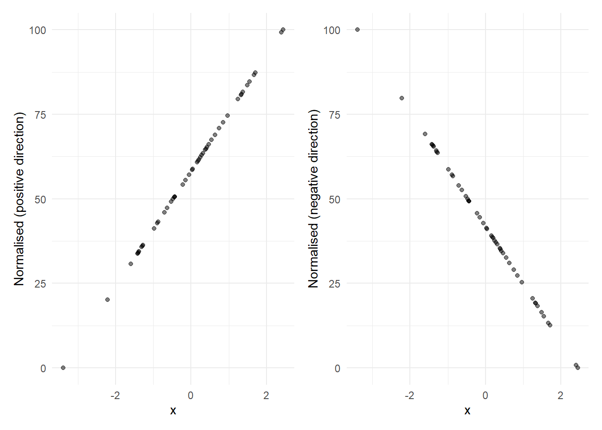
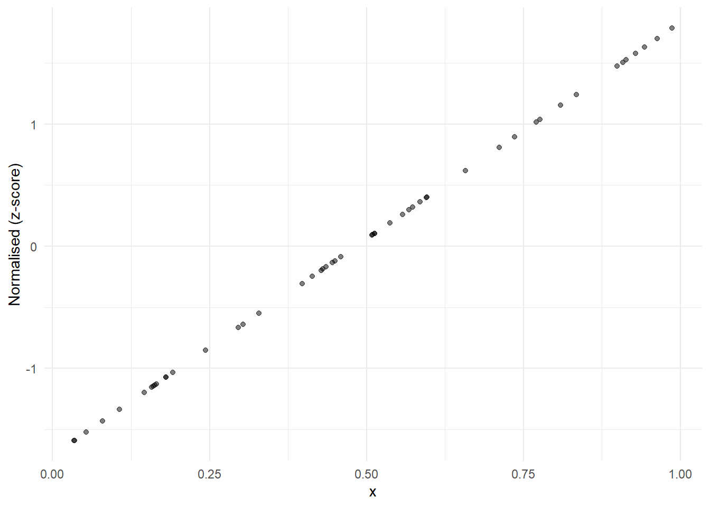
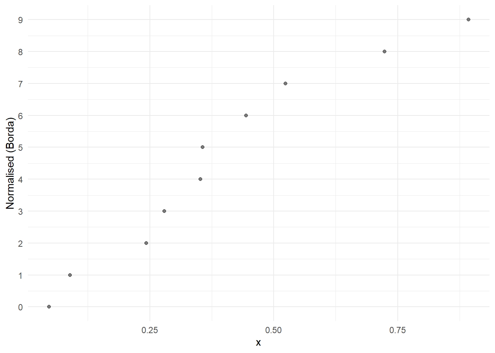
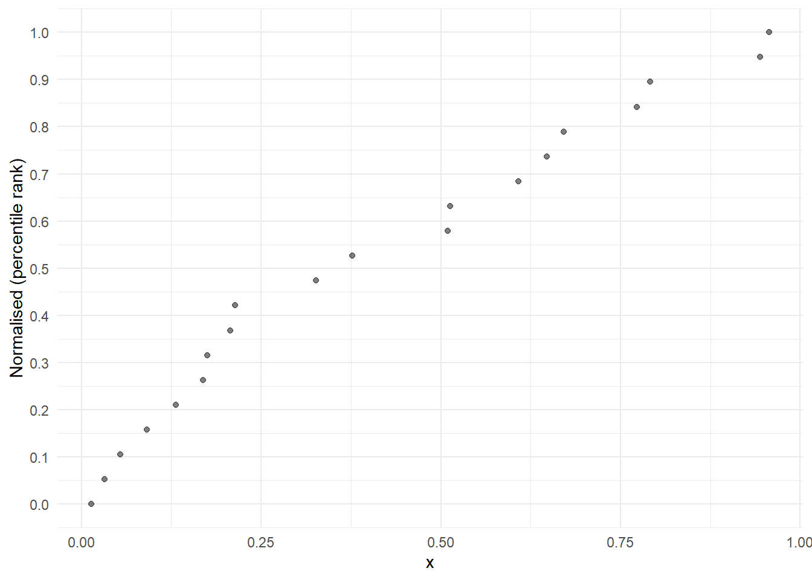

8 Normalise
Before calculating the index results we have to normalise our indicators. Normalisation involves bringing indicators onto a common scale so they can be aggregated. Consider that some indicators may have values in the order of billions (GDP), and others may be values less than one. In order to make them comparable, they are normalised, using one of various possible methods. In the normalisation step, the indicator is also reversed if it has a negative direction.
Normalisation is mandatory in the {composer} app: it is not possible to calculate the index scores unless the normalisation has been run.
8.1 About
8.1.1 Linear methods
There are several normalisation methods available in the {composer} app. The default is called “min-max”, and it simply rescales an indicator onto a specified interval with a minimum value \(l\), a maximum value \(u\), and consequently a range \(u-l\). By default in the app, indicators are scaled between 0 and 100.
\[ x' = \frac{ x - x_{\text{min}} }{ x_{\text{max}} - x_{\text{min}} } \times (u-l) + l\]
where \(x'\) is the normalised indicator value. For example, if \(l=0\) and \(u=100\) this will rescale the indicator to lie exactly onto the interval \([0, 100]\). An example of the min-max transform, for both negative and positive directionality indicators, is as follows.
The min-max approach is recommended as the default because it is easy to understand and is suitable in many cases.
A similar transformation is to take z-scores, which instead use the mean and standard deviation as reference points:
\[ x' = \frac{ x - \mu_x }{ \sigma_x } \times a + b\]
where \(\mu_x\) and \(\sigma_x\) are the mean and standard deviation of \(x\). The indicator is first re-scaled to have mean zero and standard deviation of one. Then it is scaled by a factor \(a\) and moved by a distance \(b\). This is very similar to the min-max transformation in that it can be reduced to multiplying by a factor and adding a constant, which is the definition of a linear transformation. However, the two approaches have different implications. One is that Z-scores will generally be less sensitive to outliers, because the standard deviation is less dependent on an outlying value than the minimum or maximum.
The z-score transformation looks like this, if scaled to have mean 0 and standard deviation 1:

8.1.2 Rank-based approaches
The other two normalisation approaches are different in that they are based on ranks, and are therefore nonlinear transformations. The first is called “Borda scores”, and this simply assigns a score to each indicator value based on its rank, with a 0 given to the lowest value, and \(n-1\) to the highest value (where \(n\) is the number of observations). An example applied to some random data looks like this:

Clearly this is not linear. However, rank based approaches have a nice property, that they automatically deal with outliers.
The final normalisation method is called “percentile ranks”. Percentile ranks are defined as the “percentage of scores in its frequency distribution that are less than that score” (from Wikipedia). This is similar to a rank-based approach but has one important difference - it is not dependent on the number of observations.
This can be important when some indicator have low data availability. For a data set with 50 units, say that one indicator x1 has 50 observations, and x2 has 30 (the others are missing data). Applying Borda scores to x1 will result in a normalised indicator with scores between 0 and 49, whereas applying the same to x2 will result in scores between 0 and 29. This causes a problem because they are on different scales.
Percentile ranks avoid this because they scale each indicator onto the \([0,1]\) interval (strictly, this is quantile ranks). An example is as follows.

8.1.3 Which to use?
Generally, the default approach is to use min-max, since it is easy to understand and works fairly well. However, min-max is sensitive to outliers, so be careful to check and visualise the normalised scores to ensure the results fit your needs.
Z-scores are harder to interpret, but are less sensitive to outliers. In reality, z-scores are not often used but could be useful in some contexts.
Rank based approaches can be attractive for automatically dealing with outliers. They make every indicator into a uniform distribution. This can be a simple and fair way to normalise indicators. In this case, the percentile rank approach is probably preferable since it is not affected by missing data points.
8.2 How
Normalisation in the app is straightforward. Siimply select the normalisation method you want to use from the drop-down menu.
If you select min-max or z-score, you will additionally have the option to set the parameters (upper/lower bounds, and mean/standard deviation, respectively). The other two methods have no parameters to set.
Clicking “Run” will apply the normalisation method to the data, and generates a table with the normalised data set. As in other tabs, clicking on a column in the table will show a scatter plot of the indicator in the sidebar, before and after normalisation.
You can change and adjust the normalisation simply by altering the specifications and clicking “Run” again, which will overwrite any existing normalised data.